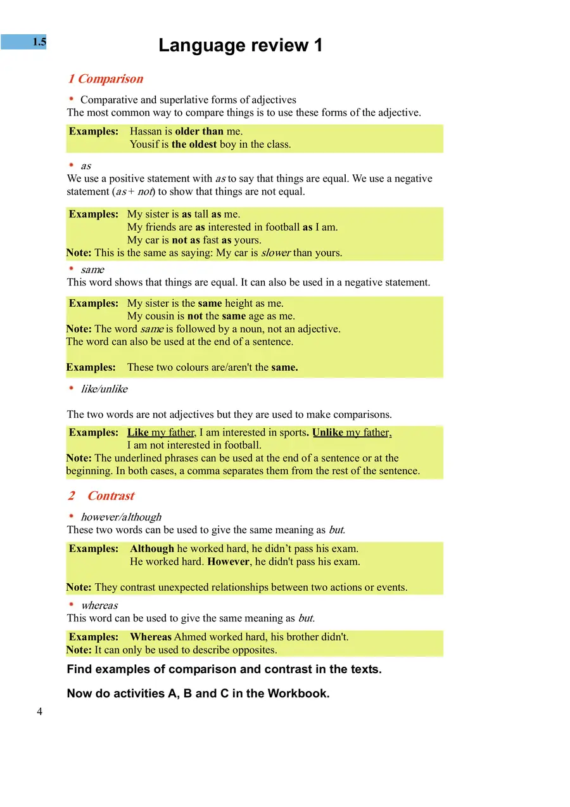

1.5 Language review 1
1 Comparison • Comparative and superlative forms of adjectives The most common way to compare things is to use these forms of the adjective. Examples: Hassan is older than me. | Yousif is the oldest boy in the class. • as We use a positive statement with as to say that things are equal. We use a negative statement (as + not) to show that things are not equal. Examples: My sister is as tall as me. | My friends are as interested in football as I am. | My car is not as fast as yours. Note: This is the same as saying: My car is slower than yours. • same This word shows that things are equal. It can also be used in a negative statement. Examples: My sister is the same height as me. | My cousin is not the same age as me. Note: The word same is followed by a noun, not an adjective. The word can also be used at the end of a sentence. Examples: These two colours are/aren't the same. • like/unlike The two words are not adjectives but they are used to make comparisons. Examples: Like my father, I am interested in sports. Unlike my father, I am not interested in football. Note: The underlined phrases can be used at the end of a sentence or at the beginning. In both cases, a comma separates them from the rest of the sentence.
2 Contrast • however/although These two words can be used to give the same meaning as but. Examples: Although he worked hard, he didn’t pass his exam. | He worked hard. However, he didn't pass his exam. Note: They contrast unexpected relationships between two actions or events. • whereas This word can be used to give the same meaning as but. Examples: Whereas Ahmed worked hard, his brother didn't. Note: It can only be used to describe opposites. Find examples of comparison and contrast in the texts. Now do activities A, B and C in the Workbook.
[
{
"num": 1,
"prompt": "Aisha is 16 years old. She has two sisters, Noura and Huda. Noura is 17 and Huda is 11. Nura is 1.78 metres and so is Aisha. Noura is the ______ of the three. Although Aisha is ______ than Noura, she is as ______ her sister. Since she is only 11, Huda is the ______ of the three.",
"answers": [
"oldest",
"younger",
"tall as",
"youngest"
]
}
][
{
"num": 1,
"question": "Bill's car is white and Richard's is blue. → Richard's car is ______ colour ______.",
"model_answer": "Richard's car is not the same colour as Bill's.",
"explain_ar": "نفي التساوي باستعمال not the same + noun (colour) + as."
},
{
"num": 2,
"question": "Two brothers, Ahmed and Hassan, got 90% in their English exam. → ______, Ahmed got 90% in the examination.",
"model_answer": "Like Hassan, Ahmed got 90% in the examination.",
"explain_ar": "استعمال Like + اسم + فاصلة للتشابه."
},
{
"num": 3,
"question": "My pen was not expensive, but my friend has a very expensive one. → My pen was ______.",
"model_answer": "My pen was not as expensive as my friend's.",
"explain_ar": "نفي المساواة بـ not as + صفة + as."
},
{
"num": 4,
"question": "There are three classes in year 1. Class A has 30 pupils, class B has 35 pupils and class C has 33 pupils. → Class B has ______.",
"model_answer": "Class B has the most pupils.",
"explain_ar": "صيغة التفضيل للعدد الأكبر: the most pupils."
}
][
{
"num": 1,
"prompt": "Football is a very popular game, ______ not everybody enjoys it.",
"answers": [
"although"
]
},
{
"num": 2,
"prompt": "______ I like fishing, I don't catch a lot of fish.",
"answers": [
"Although"
]
},
{
"num": 3,
"prompt": "The factory manager gets very angry sometimes. ______, he is very good at his job.",
"answers": [
"However"
]
},
{
"num": 4,
"prompt": "The book wasn't very interesting. I read it from start to finish, ______.",
"answers": [
"however"
]
}
]{
"pb_text_vs_image": "طُوبق النص المستخرج لصفحة PB ص 4 مع الصورة عالية الدقة: جميع الأمثلة والتنبيهات والملاحظات الخطية مطابقة 100%.",
"wb_ocr_vs_image": "قُورن نص WB ص 5 مع tesseract.js eng (الذي أخرج fowever بدل however في عنوان C، وصُحّحت بصرياً؛ وحُفظ التباين النادر Noura/Nura في نص الكتاب)."
}